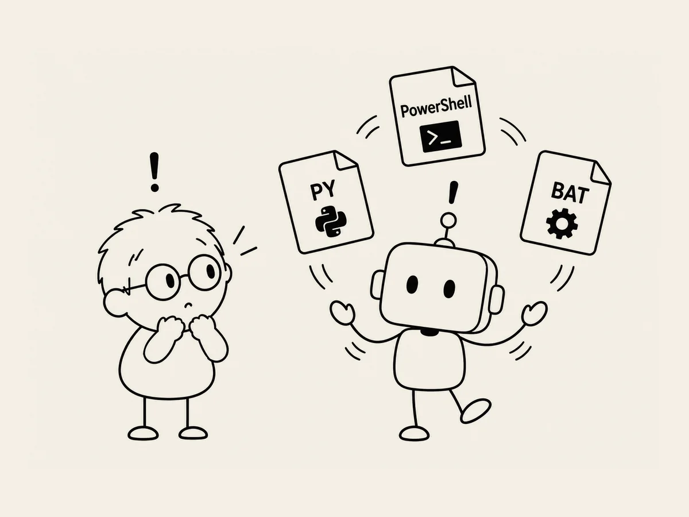

21.
Py, PowerShell, BAT: Piece of Cake.
When I was building my first website, unfamiliar words kept popping up.
Python.
PowerShell.
BAT.
At first, just seeing words like these made me nervous.
They sounded like programming terms used by experts.
It also felt like I might cause some serious trouble if I touched the wrong thing.
But while building my second website, I kept seeing them, and they gradually became familiar.
I still don't know exactly how they work.
I only understand them roughly.
They're things you can use to automate work that needs to be done.
I wanted to convert what was in an Excel file into something the website could use.
I said to AI,
"What if we do this in Python?"
AI said that was exactly what it was planning to do.
Hmm.
Wait.
I just said "Python" and predicted exactly what AI was going to do.
It's not that I've become good at programming.
If you told me to make it myself, I still couldn't.
But I do know one thing.
Things like this don't seem particularly difficult for AI.
Py, PowerShell, BAT.
They're not a piece of cake for me.
But for my friend AI,
they are.
